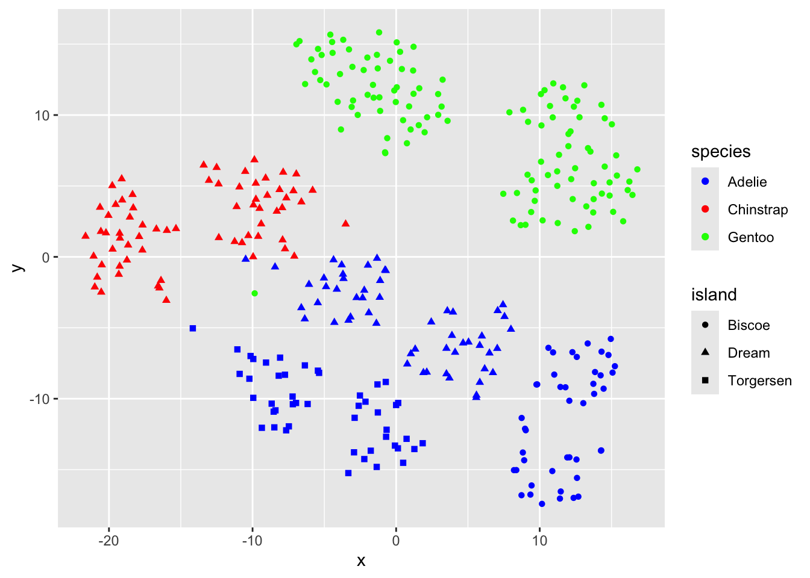

library(palmerpenguins)
library(tidyverse)
library(tsne)
library(modeldata) # for ames housing data
library(threejs)Manifold Learning
A good portion of the algorithms supporting AI and machine learning depend on the notion of ebeddings. Data sets are mapped to, or embedded in, high dimensional Euclidean vector spaces. Then, various mathematical strategies are employed to reduce data size by mapping these high dimensional points to structures in lower dimensional spaces in ways that preserve some important structural properties of the high dimensional data. Classic examples are the Word2Vec algorithm which maps similar words to nearby points in vector spaces and Principal Components Analysis which maps multidimensional vector data to lower dimensional spaces while preserving the variance of the data points. The mathematical term for the structures sought to contain the data in the lower dimensional space is manifold. Manifolds are basically vector spaces with additional structure that enable notions such as connectedness and smoothness to make sense. Think of a sphere as a two dimensional manifold in a three dimensional space, or lines and circles as one dimensional structures in a two dimensional space.
Over the past fifteen years or so these kinds of geometric ideas about working with data have coalesced into the very mathematical field of Manifold Learning. In this post, I hope to provide a way for those of us who are not mathematicians, but willing to do some work, to explore this incredibly interesting field. I will do this by pointing to some of the accessible literature, providing a simple example, and listing some R resources for exploration.
An overview of Manifold Learning
This section provides some notes on the marvelous review paperManifold Learning: What, How, and Why by Marina Meilă and Hanyu Zhang. The paper is comprehensive, clearly written, historical approach at a level suitable for beginners, and is an expert guide to the vast literature on the subject. The Annual Reviews version of the paper at the link above is pleasure to work with because there are hyperlinks to almost all of the essential papers listed.
The Basic Problem
The basic problem motivating manifold learning is data reduction. Given a data set with D features or explanatory variables, how can we transform it into a smaller data set with less features in a way that retains all of the essential information and provides some insight about the structure of the data. The idea is similar to PCA. Here we assume the data exist in a D dimensional vector space but mostly lie in or near a k dimensional subspace. PCA provides a linear mapping from \(R^D\) to \(R^k\).
The Manifold Assumption
The data are a sample from a probability distribution with support on or near a d dimensional manifold embedded in \(R^D\).
Three Paradigms for Manifold learning:
The term manifold learning was proposed in the works of Roweis & Saul (2000) who proposed the Locally Linear Embedding (LLE) algorithm and Tenenbaum et al. (2000), who introduced the Isomap algorithm. There are three basic approaches to manifold learning: Locally linear approximations, Principal Curves and Surfaces, and Embeddings.
Local Linear Approximations
- Based on classical PCA
- PCA performed on a weighted covariance matrix, with weights decaying with distance from any reference point
- Approximates data locally on a curved manifold around x
- Reduces dimension locally but provides no global representation
Principal Curves and Surfaces
- Data assumed to be of the form \(x_i = x^*_i + \epsilon\)
- The Subspace Constrained Mean Shift (SCMS) algorithm of Ozertem & Erdogmus (2011) iteratively maps each \(x_i\) to \(y_i \in R^D\) lying on the principal curve
- Method can be extended to principal surfaces
Embeddings
Marina Meilă and Hanyu Zhang propose a provisional taxonomy of embedding algorithms which they concede is superficial, but which adequately characterizes the state of the art. All approaches begin with information about the data summarized in a weighted neighborhood graph. An embedding algorithm then produces a smooth mapping that is designed to distort the neighborhood information as little as possible. The algorithms differ in their choice of information they preserve and in the constraints on smoothness. The fundamental categories of embedding algorithms are:
“One-shot” algorithms which derive embedding coordinates from principal eigenvectors of a matrix associated with the neighborhood graph of a data set or by solving an optimization problem.
Attraction-repulsion algorithms which proceed from an initial embedding, often produced by iterative improvements of a one-shot algorithm.
One-Shot Embedding Algorithms
One-Shot algorithms include:
- Diffusion Maps (DM): Coifman & Lafon (2006) which uses the eigenvectors of the Laplacian matrix to embed the data.
- ISOMAP - Tenenbaum et al. (2000)
- Preserves shortest graph paths
- Laplacian Eigenmaps - Belkin & Niyogi (2003)
- Local Transient Space Alignment (LTSA) - Zhang & Zha (2004)
Attraction-Replusion Embedding Algorithms
Attraction-Repulsion Algorithms include:
- Low Distortion Local Embeddings (LDLE) Lohli, Cloninger, and Mishne (2021)
- Maximum Variance Unfolding (MVU) Weinberger and Saul (2006)
- Stochastic Neighbor Embedding (SNE) Hinton and Roweis (2002)
- t-SNE Van der Maaten and Hinton (2008)
- Uniform Manifold Approximation and Projection (UMAP) MCinnes et al (2018)
SNE and t-SNE
This section briefly describes the SNE algorithm and its improved variation t-SNE which were designed to help visualize high dimensional data by mapping the data to a two or three dimensional space.
The intuition behind Stochastic Neighbor Embedding (SNE) which is described in the paper by Hinton & Roweis (2002), is to emphasize local distances and employ a cost function cleanly enforces both keeping the images of nearby objects nearby and keeping the images of widely separated objects relatively far apart. Most embedding methods require each high-dimensional data point to be associated with only a single location in the low-dimensional space making it difficult to unfold “many-to-one” mappings in which a single ambiguous object really belongs in several disparate locations in the low-dimensional space. SNE tries to place high dimensional data points in a low-dimensional space so as to optimally preserve neighborhood identity, and can be extended to allow multiple different low dimensional images. for example, because of its probabilistic formulation, SNE has the ability to be ex- tended to mixtures in which ambiguous high-dimensional objects such as the word “bank” can be associated several widely-separated images (e.g. both “river” and “finance” in the low-dimensional space.
The basic idea underlying SNE is to construct a Gaussian probability distribution \(P_i\) over each point, \(x_i\), in the high dimensional space that describes the conditional probability \(p_{j|i}\) that i would pick j as its neighbor. \[p_{j|i} = exp(-\| x_i - x_j\|^2/2\sigma_i^2) \sum_{k \neq i} exp(-\| x_i - x_k\|^2 / 2\sigma_i^2)\]
Then, find a similar distribution, \(Q_i\) over the points in the points \(y_i\) in the low dimensional space to which the \(x_i\) are mapped. If, for all i, \(p_{i|j}=q_{i|j}\) then the similarities will be preserved. The \({y_i}\) points are found by using gradient descent to minimize the sum of all the Kullback-Liebler divergences using the cost function: \[C = \sum_i KL(P_i \| Q_i) = \sum_i \sum_j p_{j|i}log(p_{j|i}/q_{j|i)}\]
In the high dimensional space, the \(\sigma_i\) values are selected by performing a binary search for the \(\sigma_i\) that produces a \(P_i\) with a fixed perplexity specified by the user. \(Perp(P_i) = 2^{H(P_i)}\) where \({H(P_i)} = -\sum_j p_{j|i}log_2 p_{j|i}\) is the Shannon entropy measured in bits. The \(\sigma_i\) for the low dimensional space are are set to \(1/\sqrt2\).
The t_SNE algorithm, described in van der Maaten and Hinton (2008) is an improvement on SNE that overcomes several technical difficulties. The main differences from SNE are that (1) t-SNE uses a symmetric version of the cost function which has a simpler gradient and (2) t-SNE uses a t distribution with one degree of freedom for the points in the low dimensional space. These help overcome optimization problems and mitigate the effect of the “Crowding Problem” in which the area available in the low dimensional map to accommodate moderately distant data points will not be sufficient.
In both SNE and t-SNE, “the gradient may be interpreted as the resultant force created by a set of springs between the map points \(y_i\) and \(y_j\) . . . The spring between \(y_i\) and \(y_j\) repels or attracts the map points depending on whether distance between the twoin the map is too small or too large to represent the similarities between the two high dimensional points.” The final result, t-SNE, is an algorithm that preserves local similarities between points while preserving enouth of the global structure to recognize clusters.
The art of both these algorithms comprises not only the marshaling appropriate mathematics to realize intuitive geometric ideas about data relationships, but in working through the many technical difficulties and optimization problems to provide reasonable performance. All of this described with great clarity and in considerable detail in paper by van der Maaten and Hinton referenced above.
R Examples
Have a look at the penguins data.
df_p <- palmerpenguins::penguins
glimpse(df_p)Rows: 344
Columns: 8
$ species <fct> Adelie, Adelie, Adelie, Adelie, Adelie, Adelie, Adel…
$ island <fct> Torgersen, Torgersen, Torgersen, Torgersen, Torgerse…
$ bill_length_mm <dbl> 39.1, 39.5, 40.3, NA, 36.7, 39.3, 38.9, 39.2, 34.1, …
$ bill_depth_mm <dbl> 18.7, 17.4, 18.0, NA, 19.3, 20.6, 17.8, 19.6, 18.1, …
$ flipper_length_mm <int> 181, 186, 195, NA, 193, 190, 181, 195, 193, 190, 186…
$ body_mass_g <int> 3750, 3800, 3250, NA, 3450, 3650, 3625, 4675, 3475, …
$ sex <fct> male, female, female, NA, female, male, female, male…
$ year <int> 2007, 2007, 2007, 2007, 2007, 2007, 2007, 2007, 2007…Prepare data frames for fitting the model and then for subsequent plotting.
df_p_fit <- df_p |> mutate(island = as.integer(island),
sex = as.integer(sex)) |>
select(c(-year,-species)) |> na.omit()
df_p_plot <- df_p |> select(-year) |> na.omit() Fit the t-sne model
fit_pen <- tsne(df_p_fit, epoch_callback = NULL, perplexity=50)df_p_plot <- df_p_plot |> mutate( x = fit_pen[,1], y = fit_pen[,2])
df_p_plot |> ggplot(aes(x,y, colour = species, shape = island)) +
geom_point() +
scale_color_manual(values = c("blue", "red", "green"))
#| message: false
#| warning: false
fit_pen_3D = tsne(df_p_fit, epoch_callback = NULL, perplexity=50, k=3)sigma summary: Min. : 0.503880387383428 |1st Qu. : 0.641384479538742 |Median : 0.670090486627528 |Mean : 0.673949736104439 |3rd Qu. : 0.706791396712598 |Max. : 0.78659463373759 |Epoch: Iteration #100 error is: 12.3746685881863Epoch: Iteration #200 error is: 0.193432865001175Epoch: Iteration #300 error is: 0.186292751190617Epoch: Iteration #400 error is: 0.183326837613848Epoch: Iteration #500 error is: 0.182661917355597Epoch: Iteration #600 error is: 0.182287536363847Epoch: Iteration #700 error is: 0.182045275538489Epoch: Iteration #800 error is: 0.181869697198368Epoch: Iteration #900 error is: 0.181736217313655Epoch: Iteration #1000 error is: 0.181630343711205x <- fit_pen_3D[,1]
y <- fit_pen_3D[,2]
z <- fit_pen_3D[,3]
df_p_plot <- df_p_plot |> mutate(
color = if_else(species == "Adelie", "blue",
if_else( species == "Gentoo","green", "red")))
scatterplot3js(x,y,z, color=df_p_plot$color, cex.symbols = .3,
labels = df_p_plot$species)